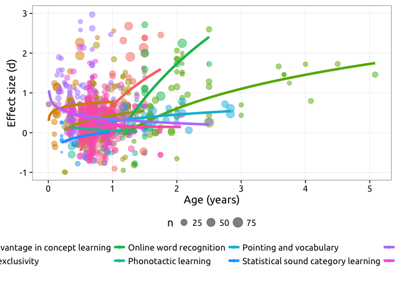
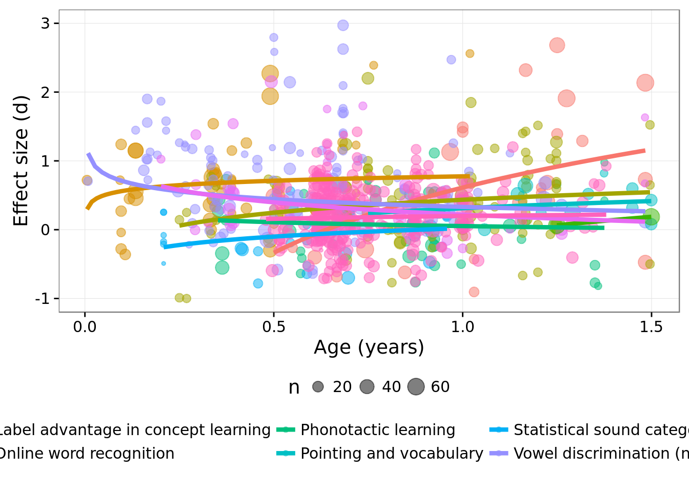

Let’s put everything together.
ggplot(all_data,
aes(x = mean_age/365, y = d_calc, col = dataset)) +
geom_point(aes(size = n), alpha = .5) +
geom_smooth(method="lm", se = FALSE, size = 1.5,
aes(weight = 1/d_var_calc), formula = y ~ log(x)) +
xlab("Age (years)") +
ylab("Effect size (d)") +
theme(legend.position = "bottom",
legend.key = element_blank(),
legend.background = element_rect(fill = "transparent")) +
scale_color_discrete(guide = guide_legend(nrow=2,
title = "")) +
ylim(c(-1, 3))
Plot without ME, to fcous on the first two years.
ggplot(filter(all_data,
mean_age < 365 * 1.5,
dataset != "Mutual exclusivity"),
aes(x = mean_age/365, y = d_calc, col = dataset)) +
geom_point(aes(size = n), alpha = .5) +
geom_smooth(method="lm", se = FALSE, size = 1.5,
aes(weight = 1/d_var_calc), formula = y ~ log(x)) +
xlab("Age (years)") +
ylab("Effect size (d)") +
theme(legend.position = "bottom",
legend.key = element_blank(),
legend.background = element_rect(fill = "transparent")) +
scale_color_discrete(guide = guide_legend(nrow=2,
title = "")) +
ylim(c(-1, 3))